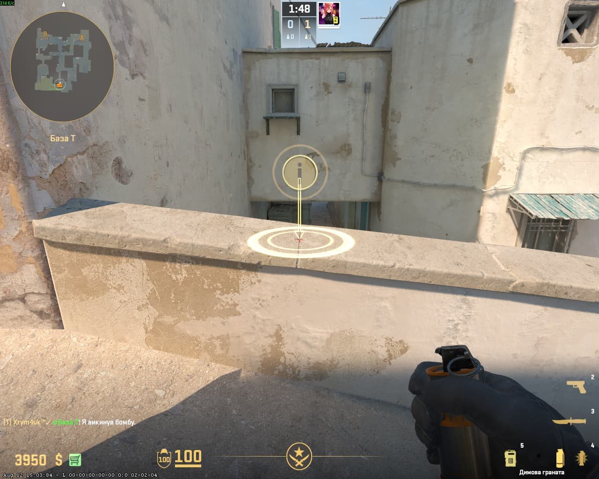
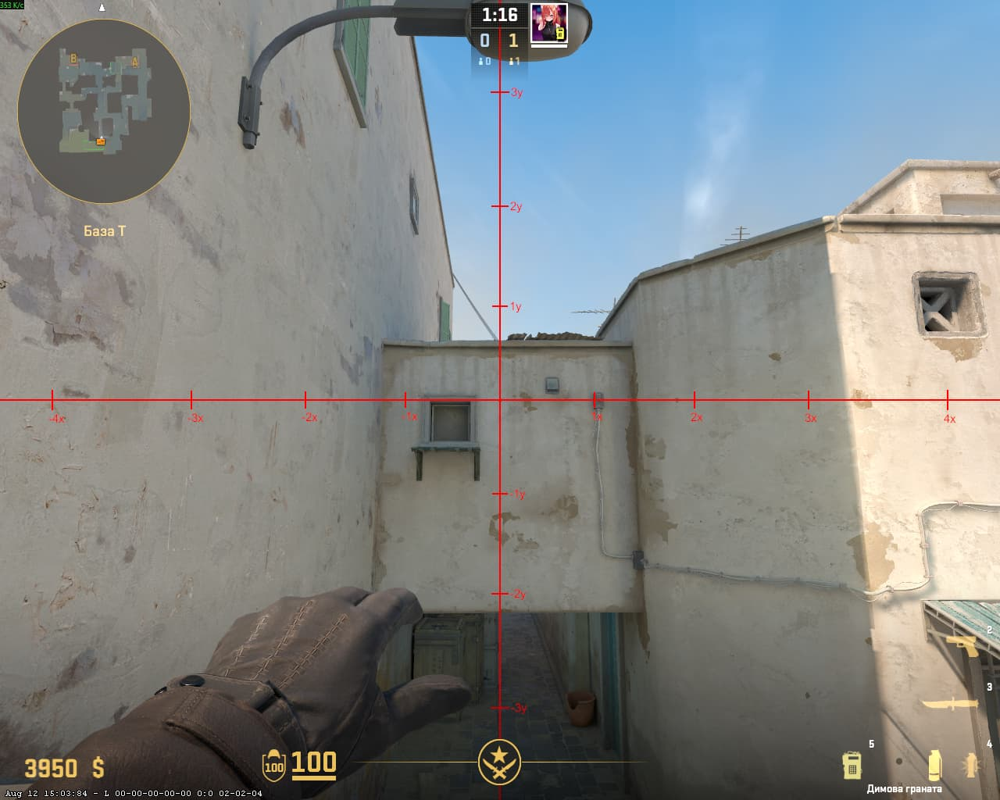
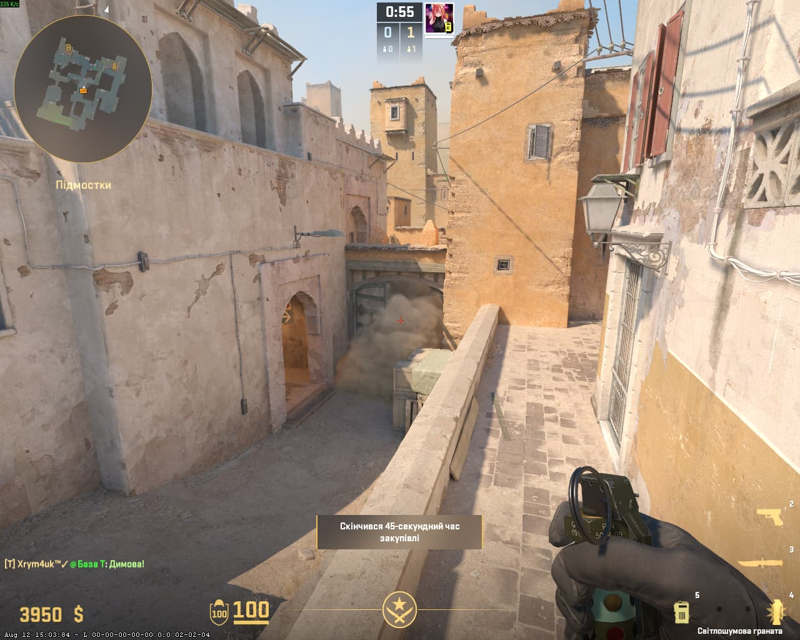
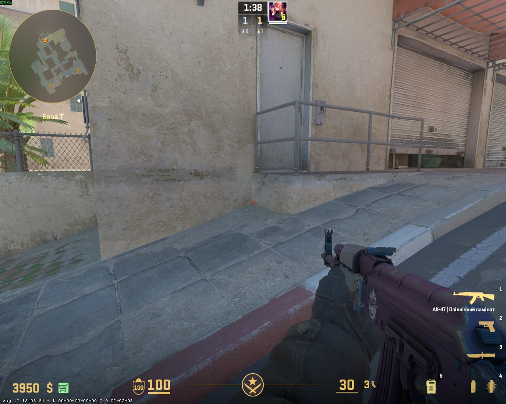
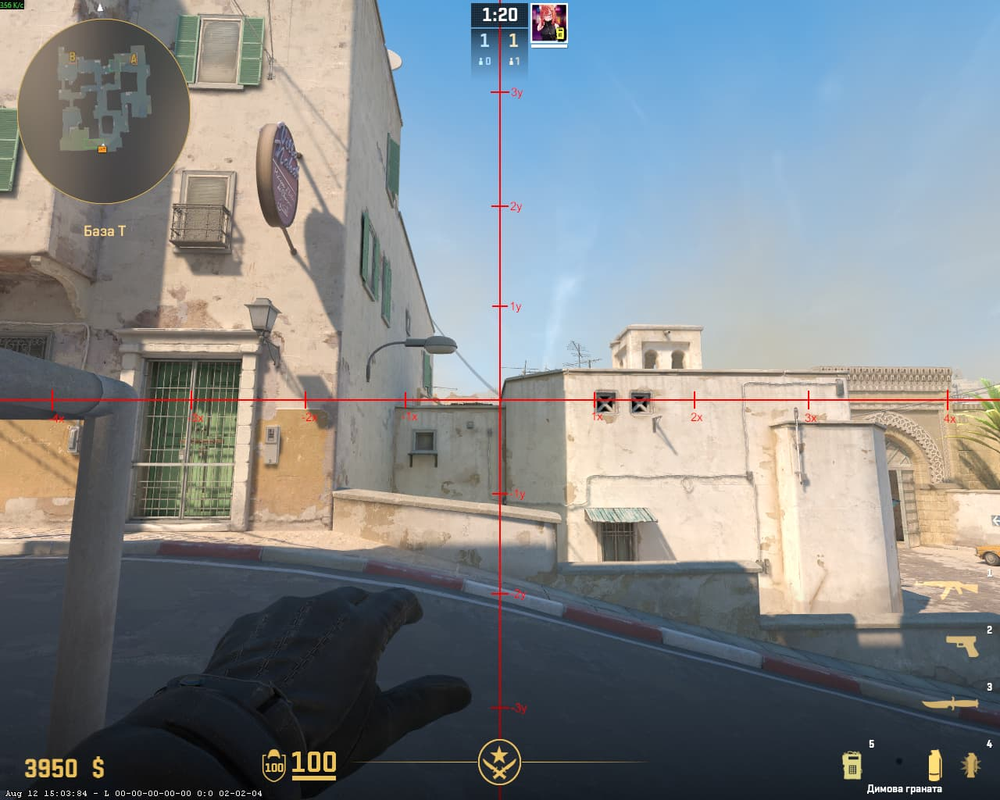
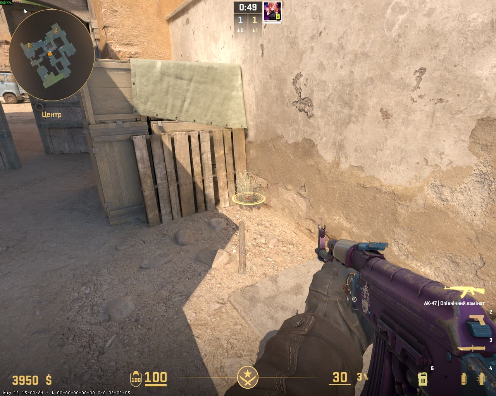
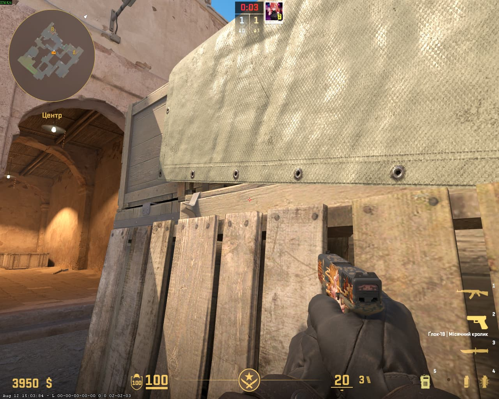
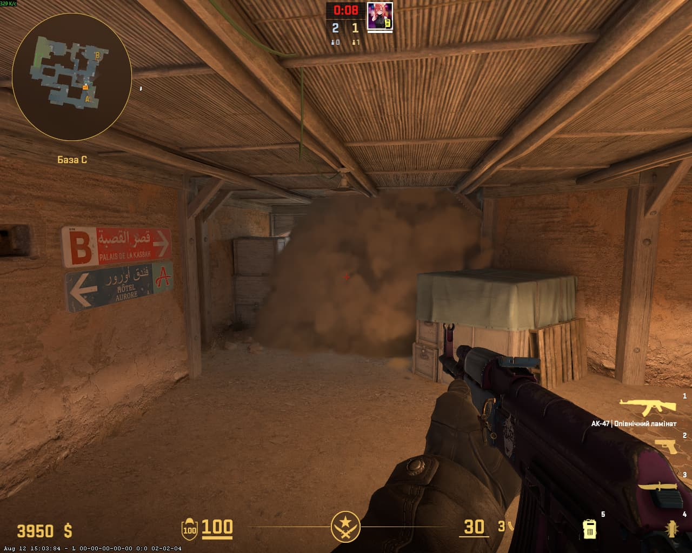

📍 Порада для телефонів: Щоб бачити сторінку точно так само, як на комп'ютері, відкрий меню браузера (3 крапки) та постав галочку «Версія для комп'ютера».
🌫️ 1. СМОК ДВЕРІ (ВАРІАНТ 1)
📍 СТАВАЙ ТУТ (ДО УПОРА ДО ТРІЩИНИ)

🎯 ЦІЛЬСЯ ТУТ

💥 ВПАДЕ ТУТ

⚡ КИДОК: JUMPTHROW + ЛКМ
🌫️ 2. СМОК ДВЕРІ (ВАРІАНТ 2)
📍 СТАВАЙ ТУТ (ДО УПОРА)

🎯 ЦІЛЬСЯ ТУТ

💥 ВПАДЕ ТУТ

⚡ КИДОК: JUMPTHROW + ЛКМ
🌫️ 3. СМОК КТ (CT SPWAN / MID)
📍 СТАВАЙ ТУТ (ДО УПОРА)

🎯 ЦІЛЬСЯ ТУТ

💥 ВПАДЕ ТУТ

⚡ КИДОК: CTRL + JUMPTHROW + ЛКМ